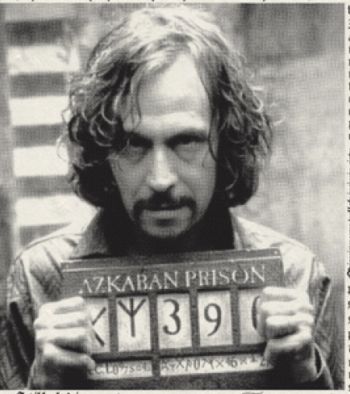

현재 아즈카반 탈출!

호그와트에 처음 입학했을 때 연회장에서 울려 퍼지던 개구리 합창단의 아름다운음색을 아직도 잊을 수 없어.
마법의 모자가 기숙사를 정해주는 순간 아이들의 환호성이 화려하게 퍼지며 반대편 벽면까지 메아리쳤지.
필요의 방 맨 구석에 숨겨진 낡은 상자 아래에서 금지된 마법 약초를 몰래 발견했다는 소문 들었어?
마법약 클래스가 끝난 뒤, 고드릭 골짜기에 얽힌 무서운 전설을 들은 후플푸프 학생들은 밤새 두려움에 떨었대.
그리핀도르의 용감한 학생들은 언제나 위대한 마법사 덤블도어의 가르침을 따라 자신들만의 길로 나아갔지.
마법 지팡이가 잔뜩 쌓여 있는 올리밴더의 가게에서 으스스한 미소를 짓던 시리우스가 갑자기 하늘로 오토바이를 타고 날아올랐어.
극도로 주의하여 접근할 것
이 자에게 마법으로 대항하려고 시도하지 마시오!